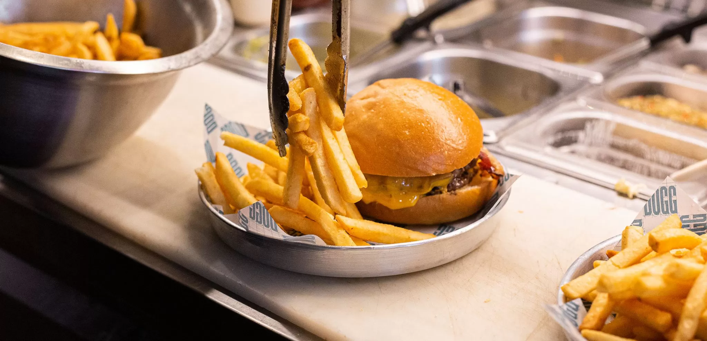
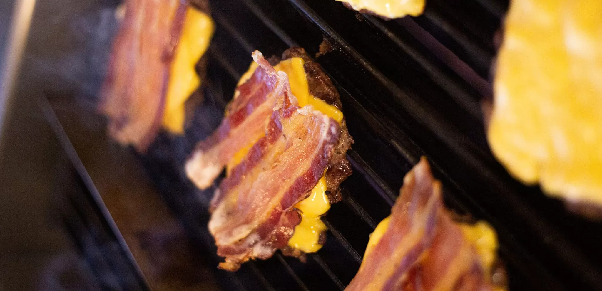

Un 22 de febrero de 2019, decidimos darle vida a B&D. La idea surge ante la necesidad de comer una buena hamburguesa de estilo yankee, sin tener que viajar a USA o Buenos Aires. Al principio se pensó en abrir algo solo para amigos cercanos, algo familiar, pero B&D se volvió viral y la gente nos obligó a crecer y a mudarnos a un nuevo local. Nuestro enfoque principal esta en la calidad de nuestro producto. Somos muy fanáticos de las hamburguesas y hemos viajado por el mundo probandolas y aprendiendo de los mejores. Todos los días horneamos nuestro propio pan, con una receta que elaboramos tras meses de pruebas. Usamos un blend con tres cortes de carne premium. Nuestra carne es picada todos los días 3 horas antes de iniciar el servicio. No usamos conservantes, ni carne congelada. Como dice nuestro lema, en B&D hacemos HAMBURGUESAS DE VERDAD
El pan de hot dog no es el clásico pan de viena al que estamos acostumbrados, es uno que desarrollamos especialmente y tiene queso en la preparación, sí, queso. Para el de la hamburguesa hicimos un pan de papa que acá no existía. Consideramos que era necesario un equilibrio entre un pan que aporta humedad, con un porcentaje de grasa bajo, para equiparar con la hamburguesa. Este pan permite comer de manera prolija, sin que se desarme la hamburguesa, y así poder disfrutar del primer al último bocado.
Nuestro fanatismo nos llevó a querer hacer nuestra propia panceta: tiene un proceso de 8 días de curado y la ahumamos con madera natural de manzano y espinillo. Es una receta con especias que le da una identidad única que sólo podés encontrar en B&D.
Pepinos, bacon, cheddar, chili, cheddar, tomate, lechuga , hongos portobello, cebolla caramelizada y mucho más. Para todas hay disponible jalapeños y salsas importadas como topping extra.
TODOS LOS DERECHOS RESERVADOS | MAXIMILIANO GABRIEL GIULIANO © 2022